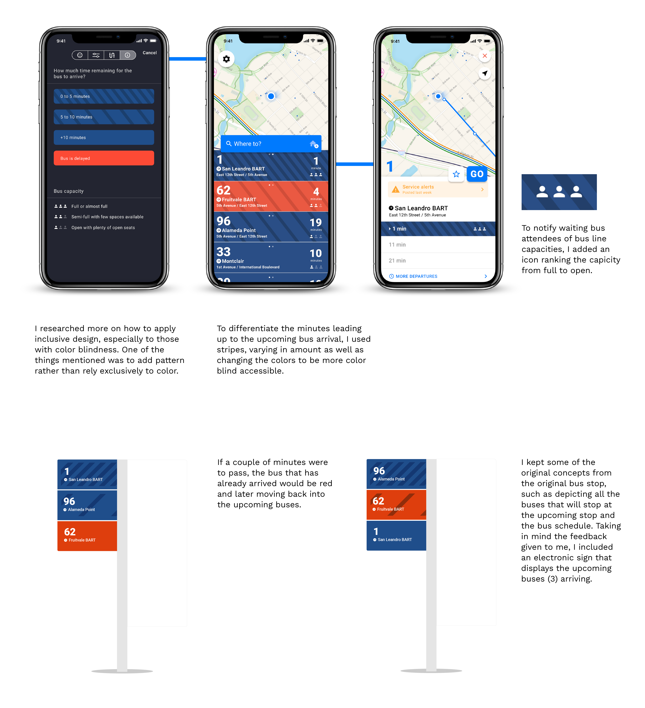

How might we improve the campus
travel experience?
travel experience?
Getting to class is an absolute struggle, especially when classes are far out of reach. When it comes to someone living far away from campus, the AC Transit is the way to go. However, the bus often is inaccurate and inconsistent when it comes to bus arrival times. At certain peaks of the day, the bus becomes extremely cramped, often requiring other riders to wait for the next one.
As a possible solution to these problems, I redesigned the AC Transit mobile app and bus stops to make the travel to and from campus more inclusive and reliable to bus riders.
As a possible solution to these problems, I redesigned the AC Transit mobile app and bus stops to make the travel to and from campus more inclusive and reliable to bus riders.
Role
Graphic DesignerUser Researcher
UI/UX Designer
Prototyping
Team
Tanvee DesaiXiaokang Feng
Kamya Venkatesan
Tools
Adobe DrawAdobe Illustrator
Figma
Timeline
2 months, Oct to Nov 2019 (Research)1 month, Nov 2019 (Ideation and Prototyping)
OVERVIEW —
Getting to class is an absolute struggle, especially when classes are far out of reach. When it comes to someone living far away from campus, the AC Transit is the way to go. However, the bus often is inaccurate and inconsistent when it comes to bus arrival times. At certain peaks of the day, the bus becomes extremely cramped, often requiring other riders to wait for the next one.
I wanted to redesign the current Transit bus stops to have it be more responsible for visibly showing late bus stops and accurate bus times. I aimed to make the bus stop more accessible for people who either regularly used the app or those who didn’t use the app, and those relatively near the bus stop. With my redesign, students would feel more confident in their campus travels.
USER RESEARCH —
I worked with three other designers to improve the campus travel experience. We felt that as students, campus terrain was often difficult to navigate around, to, and from. We interviewed a total of 12 people to compile insights, conducted secondary research to verify bugs other students faced that was a common problem within the scope of our community, and presented our findings to the class. After the user research stage of this case, we diverged to design our own individual solutions.
Check out our case study here.
Check out our case study here.
Current AC Transit designs for both bus stop (left) and mobile app (right)
IDEATION —
Many students noted how inefficient and unreliable the Transit app was when it came to bus arrival times. Inputting a light post sign at the bus stop and having different colors to determine when the bus is arriving soon would help students identify times and encourage them to speed up their walks once seeing a certain color.
I decided to move on with this app idea because I think that it would solve the inaccurate bus arrival time and students being late to the bus issues. The color would alternate based on how many minutes are left for the bus to arrive. In addition, the colors and post would be visible from far away distances to where students are able to speed-walk or run when they see a particular color.
I decided to move on with this app idea because I think that it would solve the inaccurate bus arrival time and students being late to the bus issues. The color would alternate based on how many minutes are left for the bus to arrive. In addition, the colors and post would be visible from far away distances to where students are able to speed-walk or run when they see a particular color.

After going over the interaction with potential users, I not only used the feedback to create a mid-fidelity prototype using Adobe XD, I also decided to redesign the Transit app as well.

USER TESTING —
After performing user testing with mid-fi prototypes, I received feedback from users that they liked the overall design layout, especially with the correlation of the colors on both the bus stop and the app. However, I needed to make my bus stop more accessible for those who were visually impaired, so that they were also able to tell the status of the upcoming bus. There were suggestions to apply multiple buses for the stop sign, as some bus lines might delay and, therefore, multiple buses might stop by at the same stop at the same time.Â
FINAL DESIGNS —

INTERACTION —
REFLECTION —
I expanded my knowledge and skill in design. My prior knowledge of design was to simplify complex and overwhelming data into a simple, easily-digestible visual graphic. By working on this case study, I focused less on the ‘aesthetics’ on design and focused more on the approach. I drew my approach to innovation through accessing the needs of the people, the feasibility of the product, and the success of that product.
NEXT STEPS —
Adding another feature that can add more efficiency and accuracy to bus arrival —
One of the bugs which prevented others from arriving to class on time was the bus delays. The bus was found to be unreliable to many students due to the inconsistent and inaccurate arrival times noted in the Transit app. In addition, during peak times, many students find it difficult to get on the bus home because the bus is too crowded. Having an additional feature, in which users can ping the bus location and notify other users of the amount of people on the bus, would help resolve this bug.Implementing other features to make the AC Transit more accessible to everyone —
Having a voice feature would aid those who have trouble hearing. Similar to traffic stops and lights, a voice feature would note bus arrival times every 15 minutes or 5 minutes before the bus arrives.